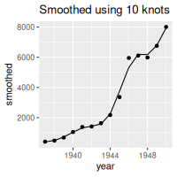
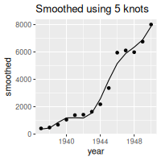

Quick-Start Guide
quickstart.Rmdoptions(knitr.graphics.rel_path = FALSE)
Using interactively
Like ‘assign’, but a list (show example with list())
-
Allowable elements:
- character string, eg
"Hello world" - integer scalar, eg
3L - numeric scalar, eg
3.141593 - date eg
as.Date("2015-11-03") - date-time using
POSIXct, e.gas.POSIXct(“2015-11-03 14:23:03”)` - date-time using
POSIXlt, e.g.as.POSIXlt("2015-11-03 14:23:03") NULL
- character string, eg
Using from the command line
- Run script as normal
.
├── Makefile
├── airmiles.csv
├── fig_smoothed.R
├── report_smooth.Rmd
└── run_all.sh
year,passengers
1937,412
1938,480
1939,683
1940,1052
1941,1385
1942,1418
1943,1634
1944,2178
1945,3362
1946,5948
1947,6109
1948,5981
1949,6753
1950,8003suppressPackageStartupMessages({
library(dplyr)
library(ggplot2)
library(command)
})
cmd_assign(.airmiles = "data/airmiles.csv",
n = 10,
.out = "fig_smoothed.png")
## read in the passenger data
airmiles <- read.csv(.airmiles)
## smooth passenger series
smoothed <- airmiles |>
mutate(smoothed = fitted(smooth.spline(x = passengers, nknots = n)))
## create a plot
p <- ggplot(smoothed, aes(x = year)) +
geom_line(aes(y = smoothed)) +
geom_point(aes(y = passengers)) +
ggtitle(paste("Smoothed using", n, "knots"))
## write the plot to a png file
png(file = .out,
width = 200,
height = 200)
plot(p)
dev.off().
├── Makefile
├── airmiles.csv
├── fig_smoothed.R
├── report_smooth.Rmd
└── run_all.sh
✔ `cmd_assign()` created `.airmiles` with value "airmiles.csv" and class "character"
✔ `cmd_assign()` created `n` with value 10 and class "numeric"
✔ `cmd_assign()` created `.out` with value "fig_smoothed.png" and class "character"
null device
1
.
├── Makefile
├── airmiles.csv
├── fig_smoothed.R
├── fig_smoothed.png
├── report_smooth.Rmd
└── run_all.sh

✔ `cmd_assign()` created `.airmiles` with value "airmiles.csv" and class "character"
✔ `cmd_assign()` created `n` with value 5 and class "numeric"
✔ `cmd_assign()` created `.out` with value "fig_smoothed_5.png" and class "character"
null device
1
dir_tree(regexp = "quickstart|workflow", invert = TRUE).
├── Makefile
├── airmiles.csv
├── fig_smoothed.R
├── fig_smoothed.png
├── fig_smoothed_5.png
├── report_smooth.Rmd
└── run_all.sh

#system2("Rscript fig_smoothed.R airmiles.csv fig_smoothed_7.png --n=7")---
title: "Smoothed Passenger Miles"
output: pdf_document
---
```{r setup, include = FALSE}
knitr::opts_chunk$set(echo = FALSE)
```
Smoothed passenger numbers:
```{r, echo = FALSE, fig.show = "hold", out.width = "49%"}
knitr::include_graphics(c("fig_smoothed_5.png", "fig_smoothed_10.png"))
Rscript fig_smoothed.R airmiles.csv 5 fig_smoothed_5.png
Rscript fig_smoothed.R airmiles.csv 10 fig_smoothed_10.png
R --quiet -e "rmarkdown::render('report_smooth.Rmd')"
# system2("sh run_all.sh")Using from a makefile
.PHONY: all
all: report_smooth.pdf
fig_smoothed_5.png: fig_smoothed.R airmiles.csv
Rscript $^ $@ --n=5
fig_smoothed_10.png: fig_smoothed.R airmiles.csv
Rscript $^ $@ --n=10
report_smooth.pdf: report_smooth.Rmd fig_smoothed_5.png fig_smoothed_10.png
R --quiet -e "rmarkdown::render('$<')"
system2("make")
#system2("touch airmiles.csv")
system2("make")